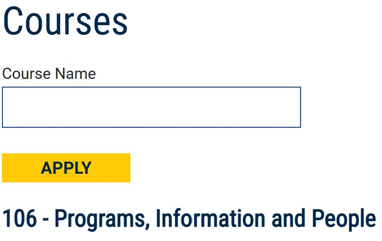

At the University of Michigan School of Information (UMSI), we are committed to supporting our students' academic success by offering a wide array of resources and services. Our academic advising team provides personalized guidance to help you navigate your curriculum, select courses, and address any academic challenges or questions you may encounter during your studies. UMSI students also have access to the extensive collections and study spaces within the University Library system, offering both digital and physical resources essential for research and coursework. Additionally, our specialized tutoring services and the UMSI Writing Center are available to support you in mastering complex subjects and enhancing your written communication skills. By utilizing these academic resources, UMSI students can thrive in their studies and achieve their educational goals.
Explore the School of Information
Application
If you are a Freshmen, you can try preferred admissions to get a guaranteed spot in the School of Information. Deadline is December 1st!
Requirements
You must have a "B" or higher in the prerequisite courses before starting the BSI program.
- Minimum GPA of 3.3 or higher
- A Minimum of 24 transferable credit complete or in progress to apply to the program.
- Have completed or currently enrolled in in SI 106 or an equivilant class.
- Have completed or currently enrolled in a first year writing course.
If you have a Sophmore standing or higher, you can use the Cross Transfer method to get into the School of Information. Deadline is Febuary 1st!
Cources
Check out the wide range of cources available ot students in the School of Information!
Side note: There will be a restructoring and renming of courses beginning in the Fall of 2025 semester.
Internships
We recommend all students to participate in an internship (for credit or not) for a number of reasons. First, it gives you the opportunity to see the results of the skills you’re building in real-world situations. Second, it gives you a better understanding of the opportunities and challenges in the field, which you bring back to your second-year coursework. Third, it allows you to build experience, as well as a stronger resume and/or portfolio, which future employers look for. And finally, we know that the connections made during internships are critical for networking and can lead to job offers.
New Transfers
Full-term tuition at the School of Information is set by the U-M Office of the Registrar. Each year near the beginning of the fall term, updated tuition and fees are posted on the Registrar's website.
The BSI curriculum gives students the skills and experiences that are in high demand with employers. Students work closely with our Career Development Office (CDO)’s comprehensive one-on-one services to identify career development goals and put a strategic plan in place to achieve them. BSI graduates work with leading companies in the information field and receive strong preparation for their careers through outstanding internships. With 98% of graduates employed in their field of choice with an average starting salary of $90,000, we have some strong career outcomes to share.